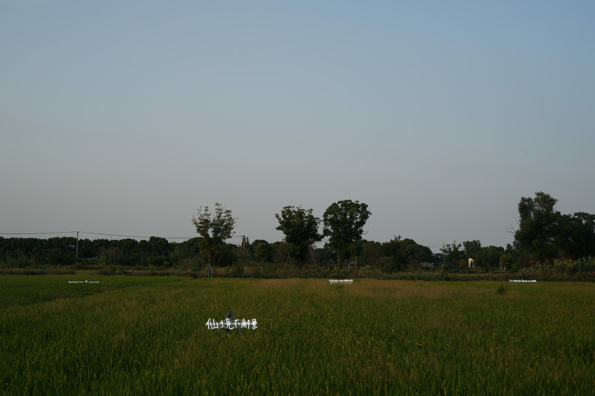
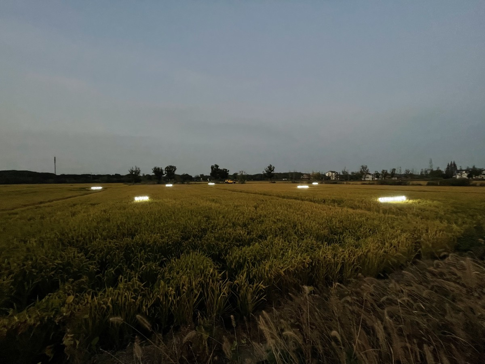
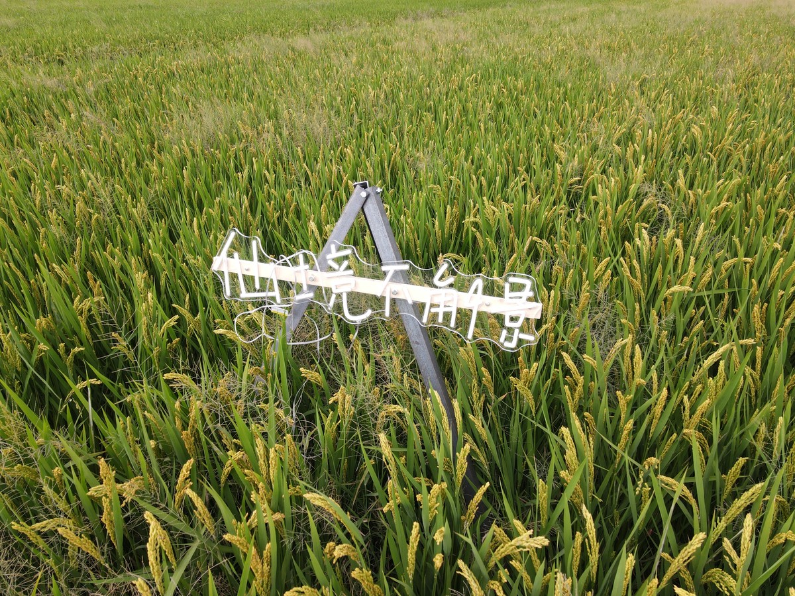
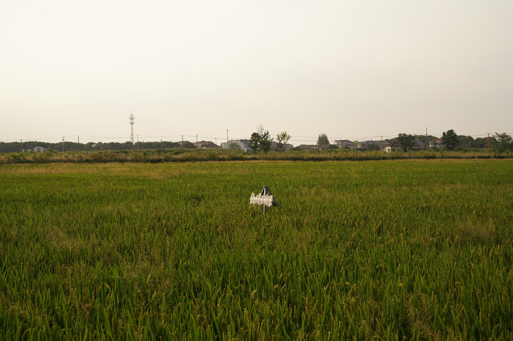

荒原 | THE WASTELAND

霓虹灯、角铁、变压器、木条，150x240cmx7，2023
LED neon, Angle iron, transformer, wood strip, 150x240cmx7, 2023
艺术家通过与村民交流，获知他们的名字以及带来的生活上的影响，然后通过人工智能的算法将他们的名字编成独有诗句，再把诗句转换成霓虹灯，安置在稻田里。霓虹灯和稻田交相呼应，季节的变化也会给作品带来不同的情景感受。
象征着消费主义的LED霓虹灯、角铁，象征着现代工业文明的稻草人造型，冷白色的灯光出现在大自然和土地之间，出现了一个反差，而这个反差就是艺术家所追寻的内心最柔软的那一部分。所谓的荒原，并不只是指我们土地的荒凉，而是我们的内心，在这个冷峻的时代，我们需要更关注人本身，去抵抗消费和工业时代的社会变迁所带来的温度的缺失。
Through interactions with villagers, the artist learns their names and the impact on their lives. Using artificial intelligence algorithms, these names are woven into unique poetic verses, which are then transformed into neon lights and placed in the fields. The neon lights harmonize with the rice paddies, and the changing seasons bring different emotional experiences to the artwork.
The LED neon lights and angle irons symbolize consumerism, while the scarecrow figures represent modern industrial civilization. The cold white light creates a stark contrast between nature and the land, embodying the artist's pursuit of the softest part of the heart. The term "wasteland" not only refers to the barrenness of our land, but also to our inner selves. In this austere era, we need to pay more attention to human nature itself, without letting the lack of warmth caused by the social changes of the consumer and industrial age.

曲水善湾，苏州
Li Li town Qushui Shanwan village, Suzhou

曲水善湾，苏州
Li Li town Qushui Shanwan village, Suzhou

曲水善湾，苏州
Li Li town Qushui Shanwan village, Suzhou